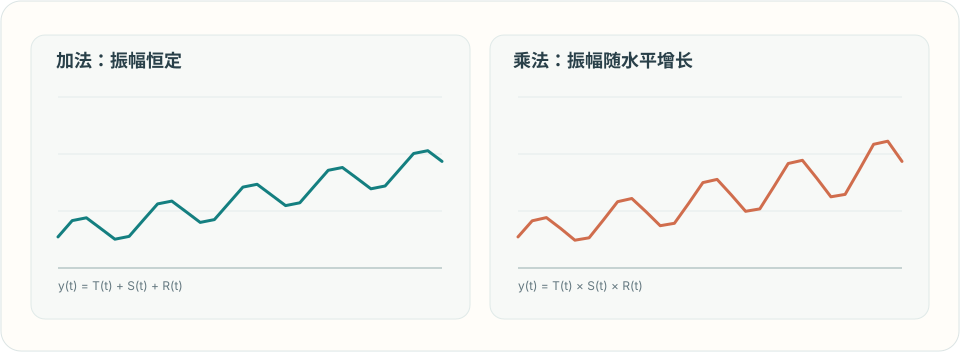

CHAPTER 02 / 28 · FOUNDATIONS
时序的组成与分解
一条总曲线中，可能同时包含长期趋势、固定季节节律和未解释的随机扰动。STL 让这些结构变得可检查。
01 · 从总观测到三种成分
月度销量上升并不必然意味着每月都比上月高；年度旺季也会叠加在长期增长上。常用的加法分解将总观测写成趋势—周期、季节与剩余三部分。为避免过度精细地解释商业周期，经典 STL 通常把不规则长期循环包括在趋势—周期项内。
比如某月观测 138，分解得到趋势 120、季节 +15、剩余 +3。总和仍是 138，但这些数值不是业务因果解释；分解的结果会随周期与平滑参数变化。
02 · 趋势、季节与商业循环的区分
季节性通常是固定频率重复的规律：工作日与周末、一年内的月份、每小时电力负荷的日节律。趋势表示长期水平变化。循环则可能是不严格固定周期的经济扩张与收缩，不能自动等同于“12 个月的季节”。
做月度年度季节分析时，设定 period=12；做每小时日季节时，设定 period=24。若每小时数据同时存在 24 小时和 168 小时节律，经典单周期 STL 不足以表示两组季节，可考虑多季节分解或额外日历变量。
03 · 加法和乘法：关键在于振幅
如果旺季总是大约比基准多 200 单位，可考虑加法。如果旺季总是比基准高 20%，随着总量上涨，季节振幅也在增加，更适合乘法或对数尺度分解。不能因为曲线有趋势就一律选乘法。

严格正值的乘法序列取对数后可改写为加法关系，但当数据含 0 或负值时不能直接取对数。由对数预测再逆变换时，若要估计均值，需额外考虑反变换偏差。
04 · STL 如何一步步得到分解
STL 的全名是 Seasonal-Trend decomposition using LOESS，即用局部加权平滑交替估计季节与趋势。先指定一个周期，再通过局部平滑估计各季节位置的变化，随后估计趋势，最后用总值减去两部分得到剩余。
- 指定
period：月份里的年季节为 12，而不是 52。 - 根据重复周期及局部平滑估计季节项；平滑窗口控制季节模式变化速度。
- 从去季节化的序列中平滑趋势—周期项。
- 剩余项定义为观测减去估计的趋势和季节；可启用鲁棒权重降低异常值影响。
STL 的“robust”不表示对断点、缺测和非线性结构都不会失效；它主要对少量异常观测更耐受。序列边界的估计尤其需要审查。
05 · 复现：六年月度合成数据的 STL
运行需安装 numpy 与 statsmodels。固定随机种子是为了方便重复，而不是保证估计结果必然接近真实分量。
import numpy as np
from statsmodels.tsa.seasonal import STL
rng = np.random.default_rng(2026)
t = np.arange(72) # 6 年 × 12 月
true_trend = 120 + .35*t
true_seasonal = 12*np.sin(2*np.pi*t/12)
y = true_trend + true_seasonal + rng.normal(0, 2, 72)
result = STL(y, period=12, robust=True).fit()
reconstructed = result.trend + result.seasonal + result.resid
assert np.allclose(y, reconstructed)
print("residual sd:", round(np.std(result.resid), 2))重构恒等式成立，仅仅因为残差按差额定义，不能证明估计找到了真实趋势。应另行检查残差是否留有明显的季节自相关、趋势是否被过度平滑，以及估计结果是否对参数敏感。
06 · 分解何时有帮助，何时会泄漏
一种可行的分解预测流程：仅在训练窗口估计季节和趋势，使用去季节化的训练数据建立预测模型，再将未来季节成分加回。也可直接使用季节性指数平滑或 SARIMA 等联合建模方法。
不要先在全样本上运行可能利用未来邻近点的平滑分解，再拿其成分回测过去——那会把未来信息带入训练期。每次滚动回测都应重新拟合分解与预测步骤。
资料与核对来源
本文中的图像与数值实验是教学示例，不能当作实证结果。公式及实现约定可对照以下开放教材与官方文档。